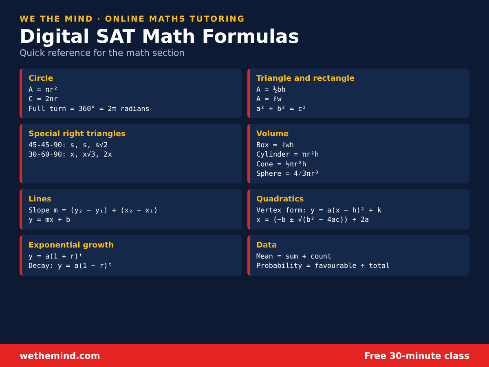

Education › SAT Math Online Tutor
SAT Math Online Tutor — Digital SAT
Targeted coaching on the question types that cost points, backed by 12 free full-length-style practice tests on this site.

Exam format at a glance
| Math section | Two adaptive modules, 22 questions each (44 total) |
|---|---|
| Time | 35 minutes per module, 70 minutes for the math section |
| Content | Algebra, advanced math, problem solving and data analysis, geometry and trigonometry |
| Calculator | A built-in graphing calculator is available for the whole section |
What we cover
- Linear equations, inequalities and systems
- Quadratics, exponentials and nonlinear functions
- Ratios, percentages and unit conversions
- Data analysis, statistics and probability
- Geometry, circles and trigonometry
- Desmos and calculator strategy
- Time management across both modules
- Error log and retest cycle
A typical 4-week plan
- Week 1: take a free practice test and classify every miss
- Week 2: attack the two weakest domains with timed sets
- Week 3: Desmos shortcuts and guess-and-check strategy
- Week 4: full practice test and a targeted review
How classes work
Every class is live and interactive on a shared digital whiteboard. Choose one-to-one mentoring, or a small group of 2–10 students on the same board and subject. Your first 30-minute class is free, and prices are on the pricing page.
Frequently asked questions
Are the practice tests free?
Yes. There are 12 free SAT math practice tests at wethemind.com/education/sat-practice/.
Is this for the digital SAT?
Yes, the lessons follow the digital SAT math format.
Can I try a tutor first?
Yes, the first 30-minute class is free.
Can I book a single problem-solving session?
Yes. A single session covers up to 5 problems.
Related
AP Calculus AB & BC Online TutorA-Level Maths Online Tutor Free SAT Math practice tests